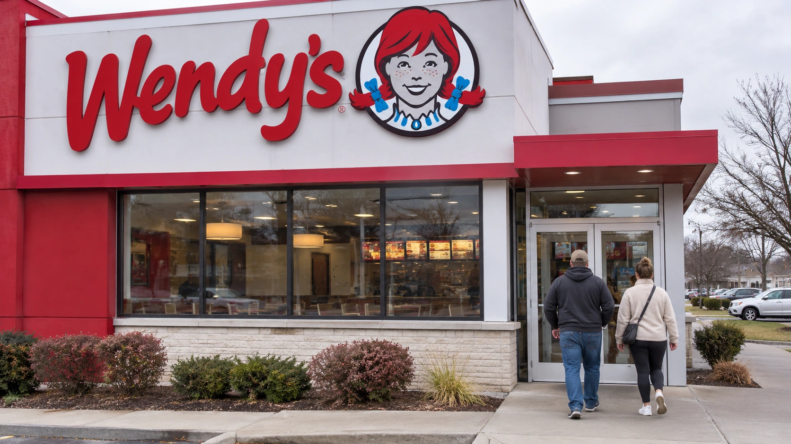

Wendy’s Sales Decline Puts Franchise Economics at the Center of Its Turnaround
U.S. same-restaurant sales fell 5.7% in the third quarter. A proposed purchase of up to 163 restaurants remains conditional as Wendy’s changes its breakfast and operator strategy.

Wendy’s reported another decline in U.S. sales on November 5 and introduced a multiyear turnaround strategy focused on customer traffic and restaurant profitability. U.S. same-restaurant sales fell 5.7% in the third quarter ended September 27. The company’s response includes a more selective approach to breakfast and changes to who operates parts of its restaurant network, putting franchise economics alongside marketing at the center of the recovery effort.
The company also signed a letter of intent with Meritage Hospitality Group and its lenders to acquire up to 163 Wendy’s restaurants. That is a proposed transaction, subject to a definitive agreement, better and higher offers, and court approval. It should not be treated as a completed acquisition or as evidence that the company has already taken control of those locations. The final scope and outcome remain unresolved.
Restaurant sales and corporate revenue tell different stories
Wendy’s reported quarterly corporate revenue of $547.0 million and net income of $15.1 million. Global systemwide sales declined 5.9%, with a 7.6% decline in the United States partly offset by 3.5% international growth. These figures describe different parts of a predominantly franchised business: sales across the restaurant network are not the same as revenue recognized by the listed parent company.
When a franchise restaurant sells a meal, the operator records the customer’s purchase. Wendy’s receives revenue through arrangements such as royalties, rather than recording that entire restaurant sale as its own revenue. Company-operated locations are treated differently. Changes in the mix of owned and franchised restaurants can therefore influence reported revenue without indicating an equivalent improvement in demand across the system.
That distinction is especially relevant when restaurant ownership is changing. An acquisition can add directly operated sales to the parent’s accounts while bringing operating costs and investment needs with it. Investors need to assess the cash and profit generated by the acquired business, rather than assuming that a larger corporate revenue figure proves the turnaround is working. Our guide to interpreting consumer-facing company earnings explains why sales composition matters alongside the headline number.
Breakfast becomes a local operating decision
Under its Dave’s Way strategy, Wendy’s says its breakfast approach will be location specific, following tests that produced significant profit improvement. The announcement does not describe a uniform nationwide withdrawal from breakfast. It signals that the economics of the daypart should be judged at the restaurant level, where local demand and staffing requirements determine whether additional opening hours are worthwhile.
The underlying tradeoff is straightforward. Serving another meal period can spread rent and equipment costs across more sales, but it also requires labor, preparation and inventory. If incremental demand is too weak, the added revenue may fail to cover those incremental costs. A restaurant can improve profitability by changing hours or operations even if the immediate effect on sales is less impressive.
Conversely, reducing service availability can make recovery harder if customers stop considering the brand for that occasion. The operating decision needs evidence from individual markets. Test results give management a basis for changing its approach, but the wider rollout must still demonstrate that restaurant-level gains can be sustained without unnecessarily weakening customer relationships.
Operator health shapes the parent company’s recovery
The proposed Meritage transaction and planned transfers to better-capitalized operators show that the turnaround extends beyond menu promotions. A franchisor depends on independent owners to maintain service, staffing and investment. An operator under financial pressure may struggle to fund improvements precisely when the brand needs more consistent execution. Changing ownership can address part of that problem, although it cannot by itself create stronger customer demand.
Acquiring restaurants also changes the parent’s exposure. Direct ownership brings more control over operations and more responsibility for wages, food costs and capital spending. The relevant comparison is between the resources committed and the durable improvement achieved. Our guide to acquisitions distinguishes announcing a possible transaction from completing it and realizing its intended benefits.
Wendy’s generated $239.0 million of operating cash flow and $174.2 million of company-defined free cash flow during the first nine months of 2026. Those are year-to-date measures, rather than third-quarter cash flow alone. Our free cash flow guide explains why the definition and reporting period need to be checked before comparing a cash figure with quarterly profit or the potential cost of a transaction.
Cash provides capacity to support the business, but potential uses compete for the same funds. Restaurant investments, debt obligations, acquisitions and shareholder distributions all have to be evaluated together. The release declared a quarterly dividend of seven cents per share; maintaining a distribution does not independently demonstrate that the operating recovery is complete.
The next useful evidence will be customer traffic, comparable sales and the profitability of the restaurants carrying out the revised strategy. Wendy’s has identified specific operating changes and a possible transaction. Demonstrating a recovery will require those actions to produce more resilient restaurant earnings, rather than simply a different ownership mix or a new description of the turnaround.